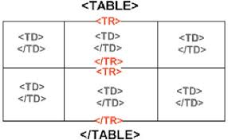

|
Posicionamiento de CajasOmar Espino | febrero 15, 2017El posicionamiento de cajas en HTML es la forma en que estan posicionados todos los elementos en el codigo, Para esto existen 4 diferentes tipos de posicionamiento.. |
Nuevas Entradas
 |
Modelo de caja en CSSOmar Espino | febrero 15, 2017Todos los elementos en HTML estan encerrados en una caja aunque algunos pueden estar visibles o no, segun el modelo de caja... |
 |
Fuentes en HTMLOmar Espino | febrero 15, 2017En HTML existen 3 familias de fuentes: Serif, Sans-Serif, Monospace... |
 |
Selectores en CSSOmar Espino | febrero 15, 2017En CSS cuando queremos aplicar un estilo a algun elementos en nuestro codigo HTML , debemos usar un selector para cada tipo elemento, para ello existen diferentes tipos de selectores... |
|  |
Tablas en HTMLOmar Espino | febrero 15, 2017Un elemento en HTML conocido como tablas son un elemento muy utilizado y muy comun en casi todas las paginas web... |